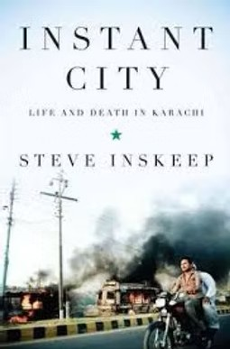
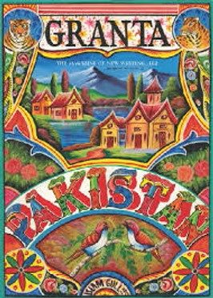
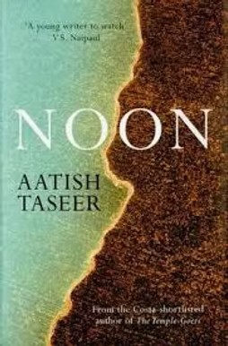
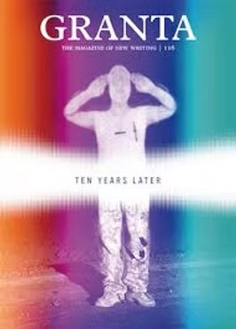
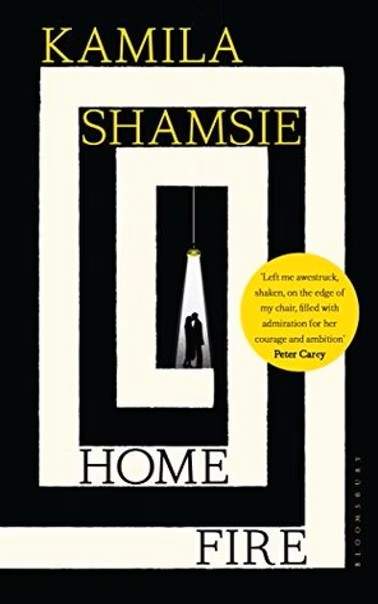
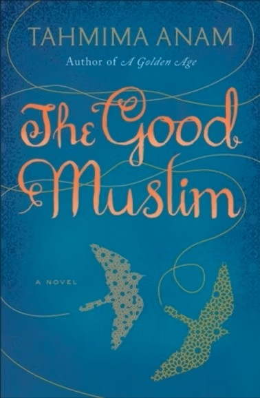

Book Reviews
-
Foreign Policy
Instant City: Life and Death in Karachi by Steve Inskeep

National Public Radio host Steve Inskeep's new work is not a comprehensive look at the complex history or troubled present of my city. It is a roving, at times whimsical narrative telling certain stories that follow, intersect or run alongside each other...
With this approach, Instant City: Life and Death in Karachi only honors the nature of this megalopolis.
-
Foreign Policy
Granta 112: Pakistan

Of the fourteen prose works in Granta 112, all but two pieces contain Islamist militancy, religious fundamentalism or extreme violence. Yet in presenting these stories as a collection, Granta has done Pakistanis a valuable service: it challenges our comfortable complaint that the country's international image is a skewed, partial slice of reality for which the Western media is responsible.
-
Herald / Dawn
Playing with Fire: Pakistan at War with Itself by Pamela Constable

There is a view of Pakistan in which the country is on a relentless decline, with few systems in place to make life bearable for the vast majority of its citizens. It is a picture of regression, violence, and human misery, and it is the portrait Washington Post foreign correspondent Pamela Constable sets out to paint in Playing with Fire: Pakistan at War with Itself.
-
Dawn
Noon by Aatish Taseer

"Cosmetic surgery has become popular in Port bin Qasim," says Aatish Taseer's narrator in Noon, referring to Karachi by its fictional name in the book. "[T]he town was filled with women still fresh from their surgeries, some still with bandages on the bridges of their noses." Not even in the depths of Defence is the town filled with such women, but Taseer's depiction of Karachi still makes it sound as if he has spent his time there driving between fashionable Zamzama restaurants and someone's mansion in Phase V, DHA.
-
Dawn
Granta 116: Ten Years Later

At its best, Granta 116: Ten Years Later manages to capture how ordinary lives around the world remain transformed long after 9/11: the American soldier returning home from Iraq, the accidental Guantanamo prisoner, the Somali father looking for a son who has left home to join a militant group.
-
Herald / Dawn
Home Fire by Kamila Shamsie

In Sophocles's play Antigone, the eponymous heroine wants her dead brother buried, in defiance of the king, because that is what the gods have said should be done with dead bodies. It is a battle between man's law and religious requirements, between state-imposed edict and personal conscience. Some reviewers have suggested that Kamila Shamsie's Booker-longlisted Home Fire, inspired by Antigone, culminates in similar conflicts.
But Shamsie's version is, more than anything else, a meditation on citizenship — in the most modern of senses. Who gets to define what citizenship means, who can have it, and what rights it confers?
-
Herald
The Good Muslim by Tahmima Anam

It is unclear how many Bangladeshis are interested in reading of bougainvillea and guavas. The Good Muslim, Tahmima Anam's novel about a group of people who survived the 1971 Pakistan-Bangladesh war and about the place of Islam in their post-war lives, does not seem to have been written for them.